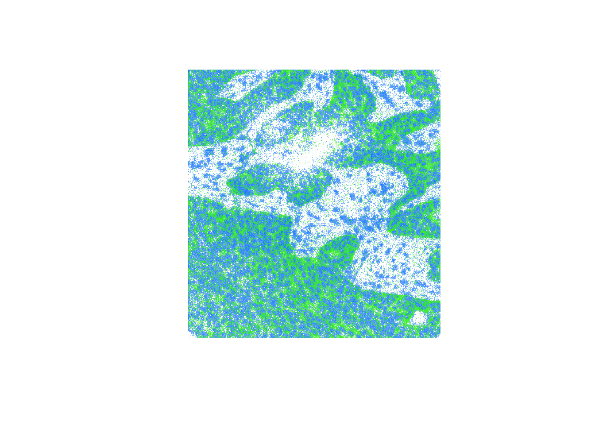

Working with **remote** Zarr arrays in R
Hugo Gruson
EMBL Heidelberghugo.gruson@embl.de
Mike Smith
EMBL Heidelberg23 June 2026
Source:vignettes/S3.Rmd
S3.RmdIt is recommended you read the general introduction “Working with Zarr arrays in R” before reading this vignette.
Reading files in S3 storage works in a very similar fashion to local
disk. This time the path needs to be a URL to the Zarr array. We can
again use zarr_overview() to quickly retrieve the array
metadata.
s3_address <- "https://uk1s3.embassy.ebi.ac.uk/idr/zarr/v0.4/idr0076A/10501752.zarr/0"
zarr_overview(s3_address)## Type: Array
## Path: https://uk1s3.embassy.ebi.ac.uk/idr/zarr/v0.4/idr0076A/10501752.zarr/0
## Shape: 50 x 494 x 464
## Chunk Shape: 1 x 494 x 464
## No. of Chunks: 50 (50 x 1 x 1)
## Data Type: float64
## Endianness: little
## Compressor: bloscYou can also pass an S3 client to the function, which is useful if you need to set credentials or other options for accessing the bucket. See the section @ref(s3-client) for more details. If absent, Rarr will try to find credentials and other settings on its own, which may not always be successful. This is equivalent to the previous code block:
s3_address <- "https://uk1s3.embassy.ebi.ac.uk/idr/zarr/v0.4/idr0076A/10501752.zarr/0"
s3_client <- paws.storage::s3(
config = list(
credentials = list(anonymous = TRUE),
region = "auto",
endpoint = "https://uk1s3.embassy.ebi.ac.uk"
)
)
zarr_overview(s3_address, s3_client = s3_client)## Type: Array
## Path: https://uk1s3.embassy.ebi.ac.uk/idr/zarr/v0.4/idr0076A/10501752.zarr/0
## Shape: 50 x 494 x 464
## Chunk Shape: 1 x 494 x 464
## No. of Chunks: 50 (50 x 1 x 1)
## Data Type: float64
## Endianness: little
## Compressor: bloscThe output above indicates that the array is stored in 50 chunks,
each containing a slice of the overall data. In the example below we use
the index argument to extract the first and tenth slices
from the array. Choosing to read only 2 of the 50 slices is much faster
than if we opted to download the entire array before accessing the
data.
z2 <- read_zarr_array(
s3_address,
index = list(c(1, 10), NULL, NULL)
)We then plot our two slices on top of one another using the
image() function.
## plot the first slice in blue
image(
log2(z2[1, , ]),
col = hsv(h = 0.6, v = 1, s = 1, alpha = 0:100 / 100),
asp = dim(z2)[2] / dim(z2)[3],
axes = FALSE
)
## overlay the tenth slice in green
image(
log2(z2[2, , ]),
col = hsv(h = 0.3, v = 1, s = 1, alpha = 0:100 / 100),
asp = dim(z2)[2] / dim(z2)[3],
axes = FALSE,
add = TRUE
)
Note: if you receive the error message
"Error in stop(aws_error(request$error)) : bad error message"
it is likely you have some AWS credentials available in to your R
session, which are being inappropriately used to access this public
bucket. Please see the section @ref(s3-client) for details on how to set
credentials for a specific request.
Using credentials to access S3 buckets
If you’re accessing data in a private S3 bucket, you can set the
environment variables AWS_ACCESS_KEY_ID and
AWS_SECRET_ACCESS_KEY to store your credentials. For
example, lets try reading a file in a private S3 bucket:
zarr_overview("https://s3.embl.de/rarr-testing/bzip2.zarr")## Error:
## ! AccessDenied (HTTP 403). Access Denied.We can see the “Access Denied” message in our output, indicating that
we don’t have permission to access this resource as an anonymous user.
However, if we use the key pair below, which gives read-only access to
the objects in the rarr-testing bucket, we’re now able to
interrogate the files with functions in Rarr.
Sys.setenv(
"AWS_ACCESS_KEY_ID" = "bYUBYVg1AsEreuDgtg5K",
"AWS_SECRET_ACCESS_KEY" = "r8FrLXc9dseD6V1P3htsu7ZBzP7Gszsd3sM1G4KX"
)
zarr_overview("https://s3.embl.de/rarr-testing/bzip2.zarr")## Type: Array
## Path: https://s3.embl.de/rarr-testing/bzip2.zarr
## Shape: 20 x 10
## Chunk Shape: 10 x 10
## No. of Chunks: 2 (2 x 1)
## Data Type: int32
## Endianness: little
## Compressor: bz2Behind the scenes Rarr makes use of the paws suite of packages (https://paws-r.github.io/) to interact with S3 storage. A comprehensive overview of the multiple ways credentials can be set and used by paws can be found at https://github.com/paws-r/paws/blob/main/docs/credentials.md. If setting environment variables as above doesn’t work or is inappropriate for your use case please refer to that document for other options.
Creating an S3 client
Although Rarr will try its best to find appropriate
credentials and settings to access a bucket, it is not always
successful. Once such example is when you have AWS credentials set
somewhere and you try to access a public bucket. We can see an example
of this below, where we access the same public bucket used in
@ref(read-s3), but it now fails because we have set the
AWS_ACCESS_KEY_ID environment variable in the previous
section.
s3_address <- "https://uk1s3.embassy.ebi.ac.uk/idr/zarr/v0.4/idr0076A/10501752.zarr/0"
zarr_overview(s3_address)## You might encounter similar problems if you’re trying to access
multiple buckets each of which require different credentials. The
solution here is to create an “s3_client” using
paws.storage::s3(), which contains all the required details
for accessing a particular bucket. Doing so will prevent
Rarr from trying to determine things on its own, and
gives you complete control over the settings used to communicate with
the S3 bucket. Here’s an example that will let us access the failing
bucket by creating a client with anonymous credentials.
s3_client <- paws.storage::s3(
config = list(
credentials = list(anonymous = TRUE),
region = "auto",
endpoint = "https://uk1s3.embassy.ebi.ac.uk"
)
)If you’re accessing a public bucket, the most important step is to
provide a credentials list with
anonymous = TRUE. Doing so ensures that no attempts to find
other credentials are made, and prevents the problems seen above. If
you’re using files on Amazon AWS storage you’ll need to set the
region to whatever is appropriate for your data
e.g. "us-east-2", "eu-west-3", etc. For other
S3 providers that don’t have regions use the value "auto"
as in the example below. Finally the endpoint argument is
the full hostname of the server where your files can be found. For more
information on creating an S3 client see the paws.storage
documentation.
We can then pass our s3_client to zarr_overview() and it
now works successfully.
zarr_overview(s3_address, s3_client = s3_client)## Type: Array
## Path: https://uk1s3.embassy.ebi.ac.uk/idr/zarr/v0.4/idr0076A/10501752.zarr/0
## Shape: 50 x 494 x 464
## Chunk Shape: 1 x 494 x 464
## No. of Chunks: 50 (50 x 1 x 1)
## Data Type: float64
## Endianness: little
## Compressor: bloscMost functions in Rarr have the
s3_client argument and it can be applied in the same
way.